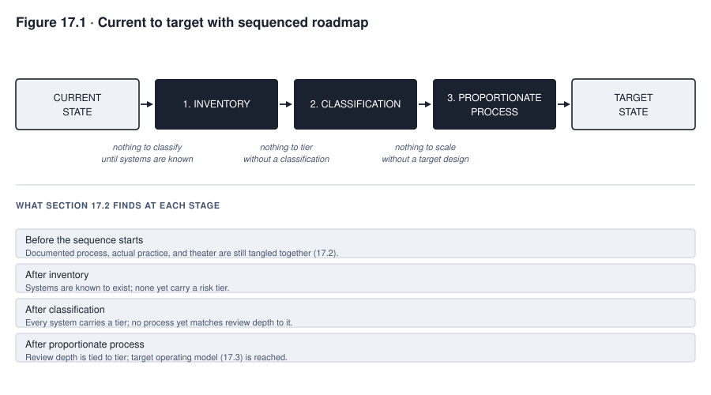
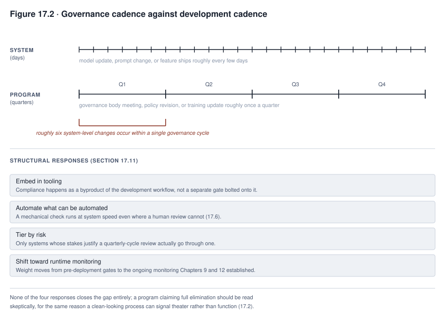

17. Implementing AI Governance
Consider a constructed scenario, continuing the running cases. Calloway Industries chartered its AI governance program the same year TalentScreen’s scheduling capability became agentic, and the program’s first designers wrote a thorough charter, assembled a governance body, and specified an impact assessment process before a single deployment had passed through it. Six months later, an internal review found that the assessment process existed in exactly the form the charter described but was being used for only two of Calloway’s three AI deployments, with no one having decided to exempt the third. The process had not failed to be documented. It had failed to be used by the population it was chartered to cover, with no legitimate exception on record for the deployment that skipped it. A governance program that its intended users are not actually using, with no documented and authorized exception, has failed at governance. This holds regardless of how thoroughly its documentation describes what it was supposed to do. A process genuinely unused because no qualifying deployment occurred in a given period is a different, unremarkable case this standard is not meant to catch.
This chapter treats the governance program itself as something built, not something declared. It is a designed artifact with users who must actually run it day to day, requirements those users can state if asked, and failure modes that show up as documented process quietly diverging from what people actually do. This chapter’s subject is assessing where a program currently stands, defining what it should look like given the organization’s own size and exposure, and sequencing the path from one to the other. It also covers gathering requirements from the people the process falls on, designing controls against a real budget, and measuring whether any of it actually manages risk instead of merely documenting activity. The chapter closes on the structural mismatch between how fast systems change and how slowly programs do.
What you will be able to do
- Assess a governance program’s current state by distinguishing documented process from actual practice, treating any unexplained gap between them as a finding, not an oversight
- Define a target operating model appropriate to a specific organization’s risk exposure, legal duties, and portfolio, not to its size alone, and sequence the path from current to target by dependency where a real dependency exists
- Gather requirements from the people a governance process falls on, treating a workaround as diagnostic evidence to investigate rather than a validated requirement in itself, and design controls proportionate to risk and viable against a real operating budget
- Evaluate whether a governance program actually manages risk, using outcome metrics instead of activity counts, and diagnose why a program is being bypassed
17.1 Governance as something you build
A governance program has users in the same sense a deployed system does. Those users are the developers whose work it reviews, the business owners whose deployment decisions it gates, and the reviewers who staff it. It has requirements, whether or not anyone has written them down, because every one of those users forms an expectation of what the process should do and how long it should take. And it has failure modes. The most common is silent divergence, where the documented process stays pristine on paper while actual practice drifts away from it, because the paper version stopped matching what the work actually required. A program that its intended users are not actually using, with no documented and authorized exception covering the gap, has failed at governance regardless of how complete its documentation is. The standard needs that qualification, since a legitimate exception, or simply the absence of any qualifying event in a given period, is not the same failure this section is naming.
Treating the program as a designed artifact, not only a policy statement, changes what building one actually involves, though the analogy has real limits worth naming alongside it. A policy’s approval is the beginning of its implementation, not its completion. The policy still needs communication to the people it binds, training, integration into the controls and tooling that will enforce it, a channel for exceptions, and periodic review. A policy that stops at “written and approved” has completed the smaller half of the work. The design discipline this book applies to AI systems, assessment before design, requirements from actual users, proportionate controls, a cost model, staged rollout, and outcome measurement, transfers usefully to the governance process itself. A governance program is not simply a product built for a different subject, however. It involves legal authority a product does not need, organizational change management, and incentive design reaching people outside any single reporting line. It also involves the independence an assurance function needs from the process it assesses, and institutional accountability, which a piece of software can never carry. The parallel is a useful design lens, not a claim that implementing a program is the same activity as building a system.
17.2 Current state assessment
Assessing where a program currently stands means distinguishing three things that get collapsed together by default. Those three things are what exists on paper, what actually functions, and what is theater, meaning activity that occurs and produces artifacts without materially affecting any decision. Before calling anything theater, the assessment needs its own effectiveness criteria stated in advance. Does the process actually catch issues before deployment. What is the quality of the evidence a review relies on. Does it ever impose conditions or escalate a case. Does it produce measurable risk reduction over time. Do its decisions hold up on appeal or in a later outcome review. Calloway’s own assessment found its deployment approval process existed exactly as documented and was actually used for a portion of deployments. For the deployments that did go through it, that process produced a governance body sign-off that had never once resulted in a rejection or a required change. A zero-rejection record is consistent with theater, but it is also consistent with a process that correctly screens out problems earlier so that only sound cases ever reach that specific review. Calloway’s team could not tell which explanation was correct without checking the effectiveness criteria above instead of the rejection rate alone. The assessment’s output is broader than one gap statement. It includes a current profile of what exists, the confidence the evidence supports in that profile, a baseline of capability and resources, the effectiveness results described, the root causes behind any material gap, and the risks and dependencies a prioritized gap list needs to reflect.
Conducting the assessment honestly requires triangulating multiple sources, not trusting or discounting any one of them by category. Interviewing the governance body about how well its own review works produces one useful data point, and so does interviewing the developers and business owners the process falls on. Each carries its own bias, the reviewers toward defending a process they run and the developers toward a process that constrains their own work. Neither position is automatically the more diagnostic one. Deployment records, ticketing system timestamps, and the systems inventory itself supply a third kind of evidence, harder to shade because a system either has a matching assessment record on file or it does not. Combining all three, interviews from both sides plus the documentary record, is what an honest assessment actually requires rather than privileging one source over the others by assumption.
17.3 Target operating model
What a governance program should look like depends on the same factors Chapter 13 already established determine operating model choice. Those factors are organizational scale, existing risk function maturity, sector regulatory exposure, the portfolio of systems actually being governed, and what functions already exist to build on or coordinate with. This chapter deliberately supplies no universal target operating model description, because supplying one would produce exactly the mismatch a governance program transplanted wholesale from a different organization’s context tends to produce. It would produce a process sized for a portfolio and risk exposure the adopting organization does not actually have. Organizational size is one input to that sizing, not a proxy for how much governance depth is warranted on its own. A small organization running even one high-impact, high-tier system carries a duty that scales to the system’s own risk, legal exposure, and affected population, not to the organization’s headcount. A target built purely on “small organization, therefore light program” can under-govern the specific system that actually needs more.
Existing functions an organization already runs are part of the target, not a competing structure to route around. A bank already running a model risk management function under prudential regulation has infrastructure for validation, documentation standards, and independent review that an AI governance program should extend rather than duplicate. What that existing function actually covers needs checking against the organization’s current, dated supervisory guidance, not assumed. Interagency model risk management guidance updated in 2026, for instance, extends to qualifying traditional and non-generative models while explicitly excluding generative and agentic AI models from that specific framework’s scope (checked 2026-09-13). A bank therefore cannot assume its existing MRM program already covers every AI system it runs, and it has to build the coverage that guidance does not reach. A manufacturer with no equivalent function starts from less, but starts from less overhead too, and a target sized to that organization’s actual system portfolio and risk exposure, not to its headcount, is what section 17.4 sequences toward.
17.4 Gap analysis and sequencing
The path from current state to target state has real dependencies in places and genuine parallel opportunity in others. Telling the two apart is the actual work of a gap analysis, not an aspirational timeline. A target profile, what the program is actually trying to become and why, needs to exist early enough to give the rest of the work something to build toward. Building a detailed proportionate process before any target exists, then discovering there is nothing to scale it against, wastes exactly the effort a target-first sequence avoids. Within that frame, a minimum inventory schema needs to exist before systems can be classified against it, and classification needs to exist before a tiered process has anything to tier against. But neither of these has to reach full completion before the next one begins. Discovery and classification can run iteratively and continuously against an evolving inventory, and training material for a proportionate process can be drafted while classification is underway. The target profile itself can be refined as inventory and classification evidence accumulates, rather than fixed once at the start. Treating every step as strictly sequential when only part of it is a real dependency chain wastes time the organization did not need to lose. Treating the whole roadmap as an unordered list when a real dependency exists produces rework once the skipped dependency finally has to be built. An inventory, once built, is also never simply complete. It needs a stated confidence level, continuous discovery for what it has not yet found, and provisional controls and escalation for any system that surfaces unclassified, instead of being treated as a one-time state that, once reached, needs no further maintenance.

Read Figure 17.1 by checking which arrows represent a genuine dependency and which represent work that could just as well run alongside its neighbor. The figure is a roadmap with real ordering constraints in specific places, not a checklist where sequence is arbitrary, but it is also not a rigid chain where nothing may proceed until everything before it is fully finished.
17.5 Requirements for the governance function
The rest of this book applies a requirements discipline to the AI systems it reviews. Applying that same discipline to the governance process itself means treating the program’s own users as a source of requirements, not only a population to train. Programs fail most often for an unglamorous reason. Nobody asked the development teams, business owners, and reviewers who actually run the process what they need from it. A process designed without that input tends to fit an imagined workflow, not the real one. Asking a developer directly where the process obstructs their actual work surfaces friction a governance team sitting outside that workflow will not notice on its own. Observing what people actually do when the process becomes inconvenient, not what the documented process says they should do, is a second and often earlier-available source of the same information. A workaround people have already built, though, is diagnostic evidence to investigate, not a validated requirement to adopt outright. The underlying cause might be a genuinely missed requirement, but it might instead be inadequate training, a poorly designed tool, misaligned incentives, an unclear scope boundary, or a deliberate attempt to avoid a control that is working exactly as intended. Only investigating the specific workaround reveals which explanation actually applies.
A third source, less direct than either but frequently the earliest available, is the pattern of exception requests a process generates. A process receiving frequent requests for an expedited path is reporting, in the aggregate, that its default timeline does not fit some identifiable category of deployment. Treating each request as an isolated one-off instead of examining the pattern across all of them misses a requirement the requesters are already stating collectively. Requirements gathered from any of these sources should be validated against the risk classification the affected systems actually carry, and against which of the causes above actually produced the workaround or the exception pattern, before being adopted. Section 17.6’s proportionate design is what turns a validated requirement into an actual control rather than an accommodation granted case by case.
17.6 Designing controls, artifacts, and workflows
Proportionate design means a control’s weight matches the risk it addresses, instead of applying one review depth uniformly regardless of tier. Calloway’s own program initially got this wrong, in the way this chapter’s case in focus develops in full. Automation fits wherever a check can be run mechanically rather than requiring a person’s judgment. An inventory field’s completeness, a classification’s internal consistency, or a required document’s presence can all be checked by tooling before anything reaches a human reviewer, reserving human judgment for the parts of a review that actually need it. Making the compliant path the easier path is one real design lever, not a complete adoption strategy on its own. A workflow where the fastest way to deploy is also the way that automatically produces the inventory entry, the classification, and the required documentation improves the odds of compliance. Ease has to work alongside clear authority, genuine incentives, training, visible support, a legitimate exception route, and actual monitoring and enforcement. A path that is merely easy, with no accountability attached to skipping it, still gets skipped by whoever finds skipping it easier still.
Artifacts should be built as reusable objects, not documents drafted fresh for each system, in the same sense Chapter 15 already established for templates generally. A model card template, an impact assessment template, and a classification rubric that a development team fills in instead of composing from scratch reduce the effort a control demands without reducing what the control actually checks. A deployment pipeline that will not let a build proceed to production without a completed inventory entry converts a policy requirement into a technical one. A technical requirement embedded in the pipeline is generally harder to route around under deadline pressure than an equivalent policy a manager can waive informally, though it is not immune to circumvention. A system deployed entirely outside the pipeline, an administrator override, a shadow deployment, or a false attestation that satisfies the gate’s check without satisfying its intent, all need their own controls. A technical gate raises the cost of bypassing it, but it does not eliminate the possibility.
17.7 Cost as a design constraint
A control’s viability depends on whether an organization can actually afford to run it at the volume the deployment produces, not merely on whether the control addresses the risk in principle. Human review of every output a system generates is straightforward to specify, and unaffordable the moment volume exceeds what a review team can actually process. A control specified without regard to this constraint tends toward one of two unsafe outcomes. It gets quietly abandoned in practice while the documentation continues to claim it is running. That creates false assurance, often worse than an openly acknowledged gap, because it looks like an active safeguard when it is not. Alternatively, it is never actually deployed at all, leaving the risk it addressed with no mitigation whatsoever. Neither outcome is acceptable. The actual response to an unaffordable control is a deliberate choice, not something that resolves itself by quiet neglect. That choice runs among redesigning the control to fit the budget, restricting the deployment’s scope or volume, or securing the resources the control needs. It can also mean deferring the deployment until one of those is possible, rejecting the deployment outright, or decommissioning a control that turns out not to be worth its cost relative to the risk it addresses.
Model cost and required oversight do not move together by any fixed rule. Assuming a cheaper model needs more monitoring, to compensate for an accuracy gap it may not actually have, replaces the benchmark the decision actually needs with a guess. The right basis for how much oversight a specific model needs is its own measured accuracy, reliability, and failure pattern on the task at hand, not its price relative to an alternative. Rate limits imposed by a vendor or a budget shape what an architecture can actually do in real time regardless of what an unconstrained design would prefer. Designing a control means designing it against the budget that will actually fund its operation, not the budget a proposal hopes to receive.
Costing a control accurately means costing it at the volume the deployment will actually reach, not the volume a pilot ran at. Volume is only one part of a fuller cost picture. That picture includes fixed costs alongside the variable per-case cost, peak load, not an average, the tooling a control needs to run at all, the cost of handling false positives and exceptions, and the training and supervision reviewers need. It also includes quality assurance on the review itself, and the cost the control avoids, incident response, rework, and consequences the control was built to prevent. All of this belongs in the model, not only the reviewer-minutes-times-case-volume calculation a pilot’s own numbers make tempting to stop at. This is why cost modeling belongs in the design stage, not after deployment. A control redesigned after it has already been quietly abandoned in practice has cost the organization the appearance of a safeguard it did not actually have, for however long the gap went unnoticed.
17.8 AI literacy and training
AI literacy is a regulatory obligation reaching both providers and deployers under the EU AI Act specifically, not merely a good practice an organization adopts voluntarily. What the obligation actually requires, though, is narrower than a specific competence test. Article 4 requires providers and deployers to take measures ensuring, to their best extent, a sufficient level of AI literacy among staff and others dealing with AI systems on their behalf. That literacy must account for their technical knowledge, experience, education, training, and the context the system will be used in. Current European Commission guidance states that Article 4 does not itself mandate a specific individual competence level or a formal knowledge test, leaving the deploying organization to design measures proportionate to its own context (checked 2026-09-13). High-risk-system human-oversight training carries its own separate, more specific duties under other provisions of the same regulation. Effective training is role-differentiated, not uniform, regardless of what the letter of the obligation requires. A developer needs different content than a business owner approving a deployment, who needs different content again than a governance body reviewer evaluating one. A single generic training module delivered to everyone regardless of role misses what each specific role actually needs to do its part correctly. Evidence of completion, records showing who was trained, on what content, and when, is evidence that training was delivered. It is not, by itself, evidence that the training worked. A program that stops at completion records still needs some measure of role-relevant competence, observed behavior, error rates, or escalation quality to know whether the delivered training actually changed what people do.
What role-differentiated content actually means in practice becomes clear role by role. A developer needs to know how the classification system determines tier and what triggers a reassessment, because those are the decisions the developer’s own work affects. A business owner approving a deployment needs to understand what the impact assessment is checking and why a rejection is not a bureaucratic obstacle but a finding about a specific risk, because that is the decision on the business owner’s desk. A governance body reviewer needs the deepest content of the three, including how to read a vendor’s model card adversarially in the sense Chapter 15 described, and how to recognize the theater pattern section 17.2 named. That is because the reviewer is the last check before a deployment proceeds. Training that gives all three the same content wastes the developer’s time on material aimed at the reviewer and leaves the reviewer under-prepared for judgment calls a generic module never covers.
17.9 Rollout and adoption
A governance program benefits from the same staged introduction Chapter 8 already established for deploying an AI system. That means a pilot with a limited scope, feedback incorporated before wider rollout, and a broader introduction only once the pilot has demonstrated the process actually works for the population it will eventually cover. Selecting a pilot deliberately means covering both the workflows the rollout will encounter most often and at least one genuinely hard case. A pilot scoped only to the easiest, most representative-looking unit can generalize well for common cases while leaving the harder ones the full rollout will include never actually tested. A pilot’s own report should state explicitly which lessons are expected to transfer directly and which specific harder cases still need dedicated testing before scaling further. Calloway’s uniform, all-at-once rollout applied the same review depth to every system regardless of risk tier, from the very first deployment, and skipped staging of this kind entirely. Section 17.10 traces what that produced.
Feedback collected during the pilot should come from the same sources section 17.5 already identified for requirements generally. Those sources are the developers, business owners, and reviewers who ran the pilot process, not the governance team that designed it. A pilot evaluated only by the team that built it tends to confirm what that team already believed. The people least likely to notice a friction point are the ones who designed the process around their own assumptions about what would be frictionless. Widening the rollout before the pilot’s feedback has actually been incorporated defeats the purpose of piloting at all; a pilot that runs, collects complaints, and proceeds to full rollout unchanged has produced a record of problems rather than a corrected process.
17.10 Evaluating whether governance works
Almost no program asks the question this section poses directly. Does the governance process actually manage risk, as distinct from producing activity that looks like risk management. Process metrics count activity. How many assessments were completed, how many reviews were held, how many documents were filed. Outcome metrics measure something different, and a fuller set matters, not only the three easiest to compute. Are issues found before deployment, when they are still cheap to fix, or only after, when a real harm has often already occurred, weighted by severity, not counted as interchangeable events. Are classifications accurate on independent review. How long does detection and containment actually take once something goes wrong. What happens to the people or groups a system’s decisions affect, including appeals and their outcomes. Does a problem recur after it was supposedly fixed. How many systems remain unknown to the inventory at any given time. Do accepted residual risks actually expire and get revisited on schedule. And is the process being bypassed, by whom, and for which category of system. A bypass pattern concentrated in one business unit or one system class is diagnostic, in exactly the way Calloway’s uniform rollout eventually revealed.
A near-zero rejection rate deserves the same scrutiny a perfect audit result deserved in Chapter 15. It is consistent with a process that correctly screens out problems before they ever reach formal review. It is equally consistent with a review that no longer meaningfully evaluates anything it is shown. Distinguishing the two requires looking past the rate itself to what the review actually changed, if anything, in the cases it passed. Did a reviewer request modifications, flag a residual risk for acceptance at a named level of authority in the sense Chapter 14 already established, or ever send a system back for rework. A review process that has never once produced any of these outcomes, across a meaningful number of cases, is a candidate for the theater finding section 17.2 introduced. That candidacy is tested against the effectiveness criteria that section names, regardless of how many reviews its logs show as completed.
Case in focus: sequencing a program across three systems, and one call that had to be undone
TALENTSCREEN · Hypothetical, following the running cases
Calloway’s governance program, chartered to cover its full AI portfolio, launched with three systems in scope. They were TalentScreen itself, the scheduling and candidate-communication capability that Chapter 12 traced becoming agentic, and a newly adopted generative tool for drafting job postings and candidate correspondence. The program followed the correct sequence at the portfolio level. Inventory came first, establishing that all three systems existed and were in scope. Classification came second, placing TalentScreen and the scheduling agent at a meaningfully higher risk tier than the job-posting drafting tool, given the disparate-impact and autonomous-action exposure the first two carried against the third’s comparatively narrower, human-reviewed-before-use profile. Even a human-reviewed drafting tool still carries its own real risks worth naming, not assuming trivial, among them discriminatory or exclusionary language a reviewer might miss, criteria that could run afoul of employment law, and accessibility gaps in generated postings. Other risks include privacy exposure from candidate correspondence, a hallucinated qualification attributed to a role, and reputational harm from a visibly careless posting. This is exactly why the classification placed the drafting tool at a lower tier rather than no tier at all.
The wrong call came at the design stage, in section 17.6’s terms. Calloway’s initial rollout applied the same full impact assessment and governance body review to all three systems uniformly, instead of building a proportionate process that matched review depth to the tier the classification had just established. The reasoning was that a single consistent process would be simpler to administer than three tiered ones. The job-posting drafting tool went through the identical multi-week review cycle built for TalentScreen’s disparate-impact exposure, a mismatch of process weight to actual risk rather than a case of the tool having no real risk to review at all.
The predictable result, visible within two months in exactly the bypass pattern section 17.10 describes watching for, was that recruiters began using the drafting tool without routing it through the review process at all. They reasoned informally that the tool’s stakes did not justify the delay a process built for TalentScreen imposed. The bypass was not malicious or even particularly hidden; it was the rational response of the tool’s actual users to a process whose weight had no relationship to the risk it was reviewing, precisely the dynamic section 17.6 warns a uniform process invites. Calloway’s governance team, discovering the bypass through the same outcome-metric monitoring section 17.10 recommends, not through anyone confessing to it, rebuilt the process as a genuinely tiered one. The job-posting tool moved to a lightweight path with defined eligibility criteria for which uses actually qualify for it, named prohibited data and use cases, and a required named owner. That path also included a sample of outputs reviewed on a set cadence, monitoring for the specific harms named above, and an escalation path if a reviewed sample surfaces a problem. It also added an automatic trigger back to fuller review if the tool’s use case changed, replacing the bare description-and-owner formality that carried no ongoing check. The lightweight path was adopted immediately and completely in this constructed scenario, which illustrates the proportionality argument section 17.6 makes. A real program would still want to confirm the diagnosis against before-and-after evidence, incident rates, review quality, and independently gathered user feedback among it. It would also want to consider whether some other factor changed at the same time, rather than treating one clean before-and-after contrast alone as proof of a single cause.
The call that had to be undone was not the classification, which had been correct from the start; it was the design decision to override a correct classification with a uniform process on the theory that uniformity would be simpler to administer. Calloway’s governance team drew the lesson forward into how it now treats every new addition to the portfolio. A classification result now sets the default review route and minimum controls for the process design that follows it, not a ceiling on what a system’s own risk can require. A proposal to make the process lighter than that default, or heavier with no specific factor behind it, however administratively convenient, is treated as a finding requiring the same documented justification section 17.2 requires of any other departure. A stronger process justified by the system’s own law, severity, irreversibility, or affected population is not itself such a departure.
17.11 The two-speed problem
System cycles often run in days. A model is updated, a prompt is changed, a new feature ships. Program cycles often run in quarters. A governance body meets on a fixed schedule, a policy revision goes through review, a training update rolls out to a workforce. Where this mismatch actually exists and how large it is varies by organization. It is a pattern worth measuring directly, lead time, decision latency, change frequency, review frequency, queue time, and how often an emergency path gets invoked, not assumed as a fixed days-versus-quarters ratio true of every program. A team operating on a genuinely fast cycle running into a genuinely slow governance cycle will tend to route around it long before the mismatch gets formally acknowledged. Measuring the actual gap is what turns that tendency into a diagnosis rather than a generalization asserted about “most” programs.
The responses that actually address a real structural gap do more than ask people to be more patient with it. They embed governance controls directly into development tooling so that compliance happens as a byproduct of the workflow instead of as a separate gate bolted onto it. They automate whatever can be automated, following section 17.6’s principle, so that a mechanical check runs at system speed even when a human review cannot. They tier controls by risk, so that only the systems whose stakes justify a slower-cycle review actually go through one. And, where appropriate, they shift some weight from predeployment gates toward the runtime controls and ongoing monitoring Chapter 9 and Chapter 12 already established. That last response needs real conditions attached, not a blanket rule that continuous monitoring justifies a lighter predeployment gate. The shift is defensible where the harm a failure could cause is reversible, where monitoring would detect the failure quickly enough to matter, where containment and safe rollback are available, and where no legal requirement or affected right demands predeployment assurance regardless of monitoring quality. A system whose failure could cause an irreversible harm, or one operating under a regulation that requires premarket conformity assessment specifically, may need stronger predeployment assurance precisely because it is well monitored afterward. Excellent detection after an irreversible harm has already occurred does not undo the harm. Monitoring and predeployment testing are complementary controls addressing different failure windows, not substitutes for each other. None of these responses closes a genuine speed gap entirely. A program claiming it has eliminated the mismatch rather than managed it should be read skeptically for exactly the reason section 17.2 already gave for treating a clean-looking process as a possible signal of theater, not function.

Read Figure 17.2 as a pattern to check against an organization’s own measured cadence, not a claim about how large the gap is universally. The shape of the mismatch, when it is real, is what the figure shows, and the four responses below the timelines are what narrows that gap where it exists. Each of them, the runtime-monitoring response in particular, applies only once its own conditions actually hold, rather than being assumed automatically from continuous monitoring’s mere existence.
Summary
A governance program is a designed artifact with users, requirements, and failure modes. A program its intended users are not actually using, with no documented and authorized exception, has failed, regardless of its documentation. Current state assessment distinguishes what exists, what functions, and what is theater, tested against effectiveness criteria stated in advance, not inferred from a rejection rate alone. It produces a current profile, evidence confidence, a capability baseline, root causes, and prioritized gaps, not one gap statement. The target operating model depends on organizational scale, sector exposure, legal duties, and portfolio, not on size alone, with no universal answer supplied. The path from current to target follows real dependencies where they exist, with a target profile established early and refined over time, and genuine parallel work run alongside the sequenced parts instead of treated as one rigid chain.
Requirements for the governance function come from the people the process falls on, gathered by asking where it obstructs and by investigating, rather than automatically adopting, what a workaround or an exception pattern is actually diagnosing. Controls should be proportionate to risk, automated wherever mechanical checking suffices, and designed so the compliant path is easy alongside real authority, incentives, and enforcement, not eased in place of them. Cost determines viability directly, costed at production volume with the full economics a control involves. An unaffordable control needs a deliberate redesign, restriction, resourcing, deferral, rejection, or decommissioning decision, not quiet abandonment or simply going undeployed. AI literacy training is a regulatory obligation under the EU AI Act, role-differentiated, evidenced by completion records that show delivery, not by themselves effectiveness. Rollout benefits from staging that covers hard cases as well as common ones. Evaluating whether governance works requires a fuller set of outcome metrics than activity counts or a bypass rate alone. Severity-weighted issues, detection and containment time, affected-party outcomes, recurrence, and unknown-system counts are among them. The two-speed mismatch between system and program cycles, where a real one exists and is worth measuring rather than assumed, is addressed by embedding controls into tooling, automating what can be automated, and tiering by risk. It is also addressed by shifting weight toward runtime monitoring only where reversibility, detection speed, containment, and legal requirements actually support that shift.
Review questions
COMPREHENSION
Explain why a governance program with complete, accurate documentation can still have failed, and state the qualification that keeps this standard from wrongly condemning a process nobody needed to use in a given period.
Identify which parts of the path from inventory to classification to proportionate process represent a genuine dependency and which parts can proceed in parallel, and explain what goes wrong when the two are confused in either direction.
APPLIED
Describe two specific methods this chapter gives for gathering requirements from the people a governance process falls on, and explain why a workaround needs investigation into its cause, not automatic adoption as a validated requirement.
A proposed control specifies human review of every system output. Explain what cost consideration this chapter would raise before accepting the control as designed, and what the actual response should be if the control turns out to be unaffordable at production volume.
SPOT THE RISK
- A governance program reports a high volume of completed reviews with a near-zero rejection rate. Identify what this pattern might signal under this chapter’s distinction between process and outcome metrics, and what additional evidence, beyond the rejection rate itself, would confirm or rule it out.
COMPARE AND DECIDE
- A system is continuously monitored after deployment. State the specific conditions this chapter says must hold before that monitoring justifies a lighter predeployment gate, and describe a case where excellent monitoring would not justify the lighter gate despite being genuinely excellent.
RUNNING CASE
TALENTSCREENUsing the case in focus, explain why applying a uniform review process across all three of Calloway’s systems produced a bypass, and identify the specific design change that addressed it, along with what further evidence a real program would still want before concluding the fix fully worked.
A governance program built, sequenced, and evaluated by this chapter’s discipline still has to survive a fact this book has not yet addressed directly. The regulatory ground it operates on will keep shifting after this book is finished. The final chapter turns to governing durably under exactly that uncertainty.